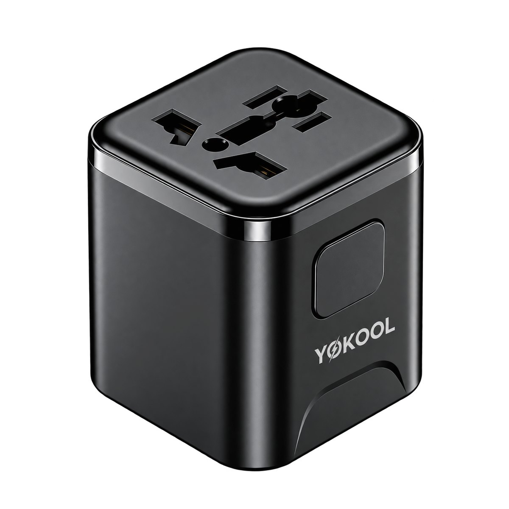
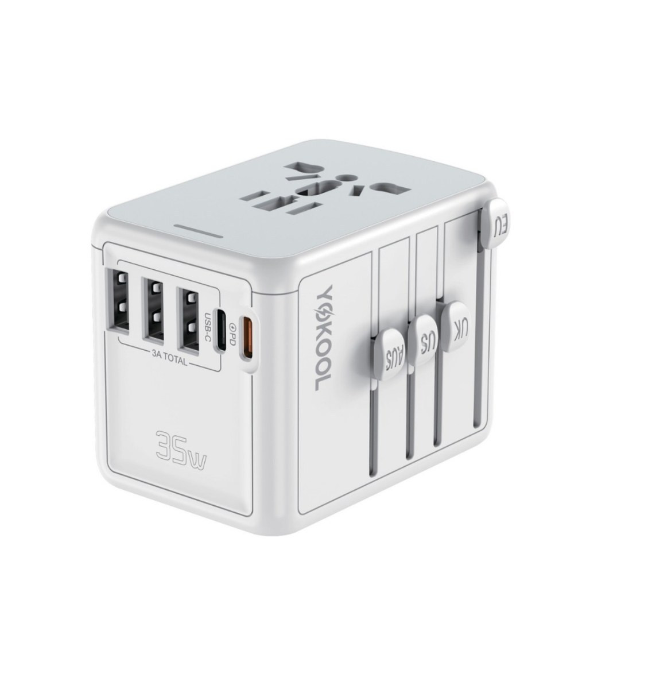

Chân cắm mỗi nước một khác
Ổ cắm ở Nhật, Anh, Úc hay châu Âu đều khác nhau. Một adapter đa năng giúp bạn cắm được ở mọi điểm đến mà không cần mua riêng từng loại.
Khám phá các mẫu ổ điện du lịch Yokool dành cho người thường xuyên đi nước ngoài. Một thiết bị nhỏ gọn có thể sử dụng với nhiều chuẩn chân cắm quốc tế, tích hợp USB-C, sạc nhanh và nhiều mức công suất phù hợp từ điện thoại đến laptop.
Năm mẫu ổ điện du lịch Yokool, từ bản chuyển chân cắm tối giản đến bản sạc nhanh cho laptop. Tất cả đều dùng chân cắm Type A/C/G/I cho hơn 180 quốc gia.

NANOChuyển chân cắm · không cổng USB
Nhỏ gọn cho hành lý tối giản
 NOMAD 25
NOMAD 25
USB-C PD 25W · GaN · siêu mỏng 26.5mm
Mỏng nhẹ, phù hợp điện thoại và tablet
 ATLAS 20
ATLAS 20
USB-C PD 20W · GaN
Lựa chọn cân bằng cho nhu cầu du lịch thông thường

ATLAS 35USB-C PD 35W · 5 cổng
Công suất cao hơn cho nhiều thiết bị
 ATLAS 70
ATLAS 70
USB-C PD 70W · GaN
Dành cho laptop và người đi công tác
Thông số lấy trực tiếp từ trang sản phẩm. Vuốt ngang để xem đầy đủ trên điện thoại.
| Tiêu chí | Nano | Nomad 25 | Atlas 20 | Atlas 35 | Atlas 70 |
|---|---|---|---|---|---|
| Công suất USB-C tối đa | Không có cổng USB | PD 25W | PD 20W | PD 35W | PD 70W |
| Số cổng USB-C | 0 | 3 | 2 | 2 | 3 |
| Số cổng USB-A | 0 | 1 (QC 18W) | 1 (QC 18W) | 3 | 1 (QC 18W) |
| Ổ cắm AC | 1 (đầu chuyển) | 2 | 2 | 1 | 2 |
| Công suất AC tối đa | 2500W @ 250V | 2500W @ 250V | 2500W @ 250V | 2500W @ 250V | 2500W @ 250V |
| Chuẩn chân cắm | Type A/C/G/I | Type A/C/G/I | Type A/C/G/I | Type A/C/G/I | Type A/C/G/I |
| Sạc điện thoại | Qua ổ AC | Có | Có | Có | Có |
| Sạc tablet | Qua ổ AC | Có | Có | Có | Có |
| Sạc laptop | Qua ổ AC | Cơ bản (25W) | Hạn chế (20W) | Laptop mỏng nhẹ (35W) | Laptop công suất cao (70W) |
| Kích thước (mm) | 52 × 55 × 56 | 90 × 55 × 26.5 | 60 × 55 × 50 | 77 × 56 × 54 | 73 × 55 × 50 |
| Phù hợp nhất cho | Hành lý tối giản | Điện thoại + tablet | Du lịch thông thường | Nhiều thiết bị + laptop nhẹ | Laptop, đi công tác |
Xem hướng dẫn chi tiết cách chọn Atlas 20, Atlas 35 và Atlas 70 →
Ổ điện du lịch còn thường được gọi là adapter du lịch hay travel adapter. Đây là thiết bị giúp bạn cắm các thiết bị điện của mình vào ổ cắm ở nước ngoài, ngay cả khi quốc gia đó dùng kiểu chân cắm khác với Việt Nam.
Mỗi quốc gia sử dụng một hoặc vài chuẩn chân cắm riêng — ví dụ Type A/B ở Mỹ và Nhật, Type G ở Anh, Type I ở Úc. Một chiếc ổ điện du lịch đa năng tích hợp sẵn nhiều kiểu chân cắm nên chỉ cần mang theo một thiết bị là dùng được ở hầu hết điểm đến. Các mẫu hiện đại còn bổ sung cổng USB-A và USB-C PD để sạc nhanh điện thoại, tablet và laptop mà không cần mang theo nhiều củ sạc.
Lưu ý quan trọng: Ổ điện du lịch chủ yếu chuyển đổi chuẩn chân cắm. Thiết bị không nhất thiết chuyển đổi điện áp 110V/220V, vì vậy người dùng cần kiểm tra thông số INPUT của thiết bị trước khi sử dụng. Phần lớn sạc điện thoại và laptop ngày nay hỗ trợ dải 100–240V nên dùng an toàn ở mọi nơi; các thiết bị công suất cao như máy sấy tóc cần kiểm tra kỹ trước khi cắm.
Ổ cắm ở Nhật, Anh, Úc hay châu Âu đều khác nhau. Một adapter đa năng giúp bạn cắm được ở mọi điểm đến mà không cần mua riêng từng loại.
Một ổ điện du lịch có thể vừa cấp điện cho ổ AC, vừa sạc điện thoại, tablet và laptop qua các cổng USB — tất cả từ một thiết bị.
Cổng USB-C PD cho phép sạc nhanh và kéo được laptop, nên bạn mang theo ít củ sạc và dây cáp hơn.
Dù đi chơi ngắn ngày hay sống dài hạn ở nước ngoài, một adapter du lịch đáng tin cậy là món phụ kiện nên có trong hành lý.
Chọn theo thiết bị bạn mang theo và nhu cầu sạc thực tế.
Chỉ cần cắm điện thoại và vài phụ kiện nhỏ. Ưu tiên gọn nhẹ.
Gợi ý công suất: chuyển chân cắm hoặc 20W
Cần sạc song song nhiều món, muốn mỏng nhẹ để bỏ túi.
Gợi ý công suất: 25W–35W
Cần sạc nhanh cho laptop cùng điện thoại, đôi khi cả tablet.
Gợi ý công suất: 35W–70W
Nhiều thiết bị của cả nhà cần cắm cùng lúc, ưu tiên nhiều cổng và nhiều ổ AC.
Gợi ý công suất: 35W–70W, nhiều cổng
Chuẩn chân cắm và điện áp ở những điểm đến người Việt hay đi.
Hướng dẫn và kiến thức giúp bạn chuẩn bị trước mỗi chuyến đi.
Ổ điện du lịch (adapter du lịch) giúp cắm thiết bị của bạn vào ổ điện ở nước ngoài bằng cách chuyển đổi chuẩn chân cắm. Nhiều mẫu còn tích hợp cổng USB-A và USB-C PD để sạc điện thoại, tablet và laptop cùng lúc.
Không. Ổ điện du lịch chủ yếu chuyển đổi chuẩn chân cắm, không chuyển đổi điện áp. Bạn cần kiểm tra thông số INPUT của thiết bị; hầu hết sạc điện thoại và laptop hiện nay hỗ trợ dải 100–240V nên dùng được ở mọi nơi.
Có. Nhật Bản dùng chân cắm Type A/B và điện áp 100V. Nếu thiết bị của bạn dùng chân cắm khác (ví dụ Type C/F phổ biến ở Việt Nam) thì cần adapter du lịch để cắm được.
Có, nếu mẫu đó có cổng USB-C PD đủ công suất. Atlas 35 (PD 35W) sạc tốt cho MacBook Air và ultrabook; Atlas 70 (PD 70W) phù hợp cho laptop công suất cao hơn.
20W (Atlas 20) đủ cho điện thoại và tablet. 35W (Atlas 35) hợp khi có thêm laptop mỏng nhẹ và nhiều thiết bị. 70W (Atlas 70) dành cho laptop công suất cao hoặc người đi công tác.
Các mẫu Yokool tích hợp chân cắm Type A/C/G/I, tương thích hơn 180 quốc gia trên thế giới.
USB-C PD (Power Delivery) cho phép sạc nhanh và cấp đủ công suất cho laptop, tablet, điện thoại qua một cổng duy nhất, giúp bạn mang theo ít củ sạc hơn khi đi du lịch.